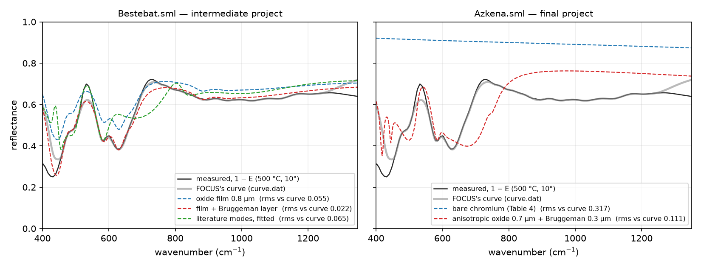

Reading FOCUS’s OSML model files and function libraries, and writing difes models so that FOCUS opens them.
FOCUS stores its declarations in OSML (Optical Spectroscopy Markup Language), an XML dialect close to content MathML: a document holds <semantics> with named <symbol> definitions (functions with arguments and defaults, either as OSML expression trees or as a formula string from the formula editor) and a <math> block with the document’s <definition>s, of which one is the dielectric function, usually called E, and another the fitted quantity (Reflectivity, Emittance). Expressions are <apply> trees over core functions (plus, times, root, norm, … and the spectroscopic profiles phonon-4p, phonon-3p, drude, gaussian, …), <link>s to definitions, <number>s and <constant>s.
FOCUS’s binary project files (.pjt) are not readable. File › Export Model › OSML format, with embedded declarations writes the model with everything it needs; that is the file to ask for.
difes osml import R-Quartz-E.sml -o quartz.json
difes osml import MODEL.sml --definition Eps -o model.json # if the dielectric function has another name
difes osml print MODEL.sml # show what the file contains, as formulasThe reader looks for the definition named E (or Epsilon, eps), or else the first definition that is a product or a sum, and maps its terms:
| OSML | difes term | parameter mapping |
|---|---|---|
product(ε∞, phonon-4p(x, wTO, gTO, wLO, gLO), …) |
\(\varepsilon_\infty\) and one fpsq per factor |
same names and order |
phonon-3p(x, dEps, w0, g) |
lorentz |
\(\omega_p = \sqrt{\Delta\varepsilon}\,\omega_0\) |
drude(x, wp, g) |
drude |
same |
| a document symbol written as a formula, called with numbers | expr |
the formula's arguments keep their values as parameters |
| any other expression the math language can write | one expr term osml_rest(x) = … (or osml_factor in a product) |
no free parameters; edit the formula to name some |
gaussian-kkg(x, A, xc, w) |
gaussian (causal Gaussian) |
same band, Kramers–Kronig partner computed by difes |
if-else, greather-than and the other comparisons, i-times, root, norm, square |
in formulas | If(cond, a, b), >, i*, Sqrt, Norm, Sqr |
phonon-anharmonic(-i), voigt, lorentzian-kkg, voigt-kkg, plasmon, debye |
— | not supported as terms; the reader stops and names the function |
FOCUS’s own example models test the reader: the quartz-E and \mathrm{LiNbO_{3}}-E files (\varepsilon_\infty times eight and nine four-parameter modes) import unchanged, and their reflectivity computed by difes shows the reststrahlen bands where FOCUS shows them. The silica examples use the anharmonic self-energy profile and the tin-oxide and zinc-carbonate ones the Voigt profile, which the FOCUS help documents only as images; those are listed on the roadmap.
difes osml project Azkena.sml -o azkena.json --grid 400 1350 512A FOCUS project file holds several dielectric functions and the reflectances built from them, with formula symbols in between (effective media, nested films). difes reads the whole document: every symbol and definition becomes a formula of the math language, saved inside the session file as its own library; the dielectric-function definitions become model nodes; every other definition becomes an expr node evaluated on the grid; a view overlays the reflectances. In the app the same happens through Import FOCUS Model or Project (⌘I), through an .sml row of the Project Explorer, or through the Bench’s Add-term menu: a file with one dielectric function (and at most its reflectance, as FOCUS’s examples) replaces the Bench’s model, anything richer is imported whole. The definitions are listed under Results as FOCUS definitions; a click draws one on the plot, ⧉ opens it in a plot tab, and the models wait under More in this session.

To reproduce a FOCUS film fit with difes’s own sample node, set the sample’s form to focus (the Bench’s Sample card has the selector): FOCUS’s incoherent film uses the amplitude-product numerator of eq. 27, which differs from difes’s energy-conserving default where the film absorbs (Validation page).
What the import does not do: FOCUS’s nested incoherent films and its Bruggeman layer run as formulas, so the Bench’s Sample card does not describe them and the fitter does not see their thicknesses. To fit such a structure in difes today, rebuild it with sample nodes (film on substrate) or edit the formulas’ numbers; an effective-medium geometry for the core is on the roadmap.
difes osml export model.json -o model.smlwrites an OSML document with the model’s terms as core functions (phonon-4p, phonon-3p, drude), Gaussian and expression terms as formula-encoded symbols, a Reflectivity-E symbol with FOCUS’s own Fresnel formula and a Reflectivity definition, so that FOCUS opens the file and can fit it. A model exported and imported again evaluates to the same \varepsilon on any grid; that round trip is a test.
Bounds, frozen flags and errors have no place in OSML and are not written; the difes model file remains the primary record.
difes osml functions Reflectance-WN.sml
difes osml functions Emittance-WN.sml --project lib.jsonprints every symbol of a FOCUS library as a formula of the math language (- in FOCUS names becomes _, local sub-definitions are inlined) and, with --project, adds them to a project library with their provenance. FOCUS’s four standard libraries, reflectance, transmittance, emittance and Fresnel coefficients, imported this way evaluate to the same numbers as difes’s own optics functions at the same \varepsilon and thickness; that identity is a test and the reason the plate formulas in Part II can be quoted with confidence.
difes library list
python -c "from difes import osml, Libraries; osml.write_functions(Libraries('lib.json').scopes['project'].entries, 'lib.sml')"writes a project library as an OSML library of formula-encoded symbols with their provenance as annotations. FOCUS reads formula symbols through its formula editor; only the math language’s FOCUS-compatible subset (no Python aliases) should be used in formulas meant to travel.